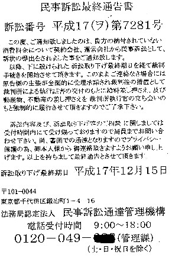

先日、母から携帯に電話がかかってきた。出ると、「急いで孫（σ(-_-)の娘）と連絡を取りたいが、携帯が留守電になっていて連絡が取れないので困った」という。
「どうしたの？」と聞くと、「孫宛に変な葉書が来ている」という。
「どんな葉書？」と聞くと、
「それがね、なんだか東京の裁判所みたいなところから。なんでもすぐ連絡して消費税かなんか払わないと、不動産を差し押さえるって書いてある」
それだけ聞いただけで笑えてきた。そいで
「お母さん、それは偽物。娘に連絡なんかしないで放っとけばいい」と返事した。
「えっ、偽物？」
「いまはやりの振り込めサギみたいなもん。サギ師はそんな葉書を日本中に出しているんだよ」
「ふ〜ん、でも“明日までに連絡がなければ裁判を起こす”って書いてある....」
「だからウソだってば。だって娘宛なのに、お母さんの住所宛に娘の旧姓で来たんだろ」
「うん」
娘は 勤め先が母の家に近かったので、社会にでてから母の家に居候していた。５年前に結婚して退職、住所も姓も変わった。
「本物だったら、５年前の住所宛に旧姓で来るワケがないじゃんか」
「そうか....」
「どっかの名簿で娘の名前をみつけて、やたらに出しているんだよ。ウチにも前に来たことがある」
架空請求http://www.asamiryo.jp/ftk212.html
「そうか....なら安心した。私はまた孫が何かやったかと思った.....」
「それはともかく、それをＨＰのネタにしたいので、葉書をウチに送ってほしい」
「そんな面倒くさいこと....」
「そんなこと、云わずに....」
というわけで、これが証拠の架空葉書(笑)

|